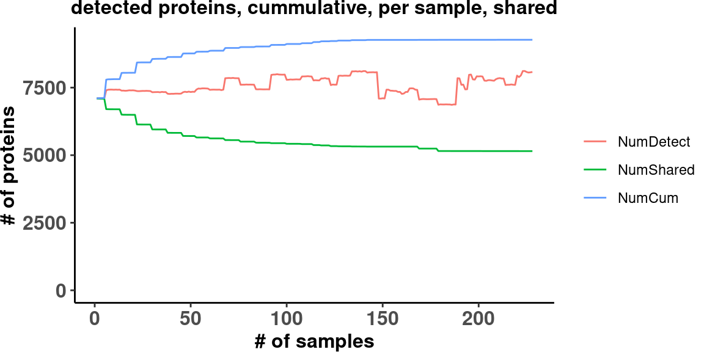

source(snakemake@input$config)
# Load sample annotation
#sa <- fread('/s/project/mitoMultiOmics/multiOMICs_integration/raw_data/proteomics_annotation.tsv')
sa <- fread(snakemake@input$sample_annotation)
sa <- sa[USE_FOR_PROTEOMICS_PAPER == T]
# Read raw protein matrix
raw_prot <- fread(snakemake@input$raw_prot)
# raw_prot <- fread('/s/project/mitoMultiOmics/multiOMICs_integration/raw_data/proteomics_not_normalized.tsv')
dim(raw_prot)
## [1] 9270 231
# Subset for the paper cases
keep_columns <- c( "geneID", sa$SAMPLE_ID)
raw_prot <- raw_prot[ , ..keep_columns ]
prot_det <- as.matrix(raw_prot[,2:ncol(raw_prot), with=FALSE] > 0)
# clean data and sort by num of detected samples
prot_det <- prot_det[,colSums(prot_det) > 5000] # filter for samples with less than 5000 x TRUE
# prot_det <- prot_det[,order(colSums(prot_det))] # sort by number of proteins detected
# iterate through the index of you samples 1 ... 200
# and save your last value (here total detected proteins till index i)
all_detected <- prot_det[,1]
shared_detected <- prot_det[,1]
cum_num_detected <- numeric(ncol(prot_det))
shared_num_detected <- numeric(ncol(prot_det))
for(i in 1:ncol(prot_det)){
all_detected <- all_detected | prot_det[,i]
shared_detected <- shared_detected & prot_det[,i]
cum_num_detected[i] <- sum(all_detected)
shared_num_detected[i] <- sum(shared_detected)
}
# merge data and prepare it for ggplot
dt2plot <- melt(1:2, value.name="NumProteins", variable.name="Variable",
data=data.table(
rank=1:ncol(prot_det),
sampleID=colnames(prot_det),
NumDetect=colSums(prot_det),
NumShared=shared_num_detected,
NumCum=cum_num_detected
))
# plot data
Fig_S2a <- ggplot(dt2plot, aes(rank, NumProteins, color=Variable)) +
geom_line() +
ylim(c(0, max(dt2plot[,NumProteins]))) +
ylab("# of proteins") +
xlab("# of samples")+
ggtitle("detected proteins, cummulative, per sample, shared")+
theme_classic()+
theme(plot.title = element_text(hjust = 0.5, size=12,face="bold"),
axis.title.y = element_text(face="bold", size=12) ,
axis.title.x = element_text(face="bold", size=12) ,
axis.text.x = element_text(size=12, face="bold") ,
axis.text.y = element_text(face="bold", size=12),
legend.title = element_blank(),
plot.margin = margin(0, 0, 0, 0, "cm"))
Fig_S2a

pdf(snakemake@output$fig, # "/s/project/mitoMultiOmics/multiOMICs_integration/Figures/Supplementary_figures/S_Fig2_a.pdf",
width = 3, height =6, useDingbats=FALSE )
print(Fig_S2a)
dev.off()
## png
## 2
IyctLS0KIycgdGl0bGU6IFN1cHBsZW1lbnRhcnkgRmlndXJlIDJhCiMnIGF1dGhvcjogUm9iZXJ0IEtvcGFqdGljaCwgRG1pdHJpaSBTbWlybm92CiMnIHdiOgojJyAgaW5wdXQ6IAojJyAgLSBjb25maWc6ICdzcmMvY29uZmlnLlInCiMnICAtIHJhd19wcm90OiAnYHNtIGNvbmZpZ1siUkFXX1Byb3RlaW4iXWAnCiMnICAtIHNhbXBsZV9hbm5vdGF0aW9uOiAnYHNtIGNvbmZpZ1siQU5OT1RBVElPTiJdYCcKIycgIG91dHB1dDoKIycgIC0gZmlnOiAnYHNtIGNvbmZpZ1siRklHVVJFX0RJUiJdICsgIi9TdXBwbGVtZW50YXJ5X2ZpZ3VyZXMvU19GaWcyX2EucGRmImAnCiMnIG91dHB1dDogCiMnICAgaHRtbF9kb2N1bWVudDoKIycgICAgY29kZV9mb2xkaW5nOiBoaWRlCiMnICAgIGNvZGVfZG93bmxvYWQ6IFRSVUUKIyctLS0KCnNvdXJjZShzbmFrZW1ha2VAaW5wdXQkY29uZmlnKQoKIyBMb2FkIHNhbXBsZSBhbm5vdGF0aW9uCiNzYSA8LSBmcmVhZCgnL3MvcHJvamVjdC9taXRvTXVsdGlPbWljcy9tdWx0aU9NSUNzX2ludGVncmF0aW9uL3Jhd19kYXRhL3Byb3Rlb21pY3NfYW5ub3RhdGlvbi50c3YnKQpzYSA8LSBmcmVhZChzbmFrZW1ha2VAaW5wdXQkc2FtcGxlX2Fubm90YXRpb24pCnNhIDwtIHNhW1VTRV9GT1JfUFJPVEVPTUlDU19QQVBFUiA9PSBUXQoKCiMgUmVhZCByYXcgcHJvdGVpbiBtYXRyaXgKcmF3X3Byb3QgPC0gZnJlYWQoc25ha2VtYWtlQGlucHV0JHJhd19wcm90KQojIHJhd19wcm90IDwtIGZyZWFkKCcvcy9wcm9qZWN0L21pdG9NdWx0aU9taWNzL211bHRpT01JQ3NfaW50ZWdyYXRpb24vcmF3X2RhdGEvcHJvdGVvbWljc19ub3Rfbm9ybWFsaXplZC50c3YnKQpkaW0ocmF3X3Byb3QpCgojIFN1YnNldCBmb3IgdGhlIHBhcGVyIGNhc2VzCmtlZXBfY29sdW1ucyA8LSBjKCAiZ2VuZUlEIiwgc2EkU0FNUExFX0lEKQpyYXdfcHJvdCA8LSByYXdfcHJvdFsgLCAuLmtlZXBfY29sdW1ucyBdCgpwcm90X2RldCA8LSBhcy5tYXRyaXgocmF3X3Byb3RbLDI6bmNvbChyYXdfcHJvdCksIHdpdGg9RkFMU0VdID4gMCkKCgoKCiMgY2xlYW4gZGF0YSBhbmQgc29ydCBieSBudW0gb2YgZGV0ZWN0ZWQgc2FtcGxlcwpwcm90X2RldCA8LSBwcm90X2RldFssY29sU3Vtcyhwcm90X2RldCkgPiA1MDAwXSAgICAgIyBmaWx0ZXIgZm9yIHNhbXBsZXMgd2l0aCBsZXNzIHRoYW4gNTAwMCB4IFRSVUUKIyBwcm90X2RldCA8LSBwcm90X2RldFssb3JkZXIoY29sU3Vtcyhwcm90X2RldCkpXSAgICMgc29ydCBieSBudW1iZXIgb2YgcHJvdGVpbnMgZGV0ZWN0ZWQKCgojIGl0ZXJhdGUgdGhyb3VnaCB0aGUgaW5kZXggb2YgeW91IHNhbXBsZXMgMSAuLi4gMjAwCiMgYW5kIHNhdmUgeW91ciBsYXN0IHZhbHVlIChoZXJlIHRvdGFsIGRldGVjdGVkIHByb3RlaW5zIHRpbGwgaW5kZXggaSkKYWxsX2RldGVjdGVkICAgICAgICA8LSBwcm90X2RldFssMV0Kc2hhcmVkX2RldGVjdGVkICAgICA8LSBwcm90X2RldFssMV0KY3VtX251bV9kZXRlY3RlZCAgICA8LSBudW1lcmljKG5jb2wocHJvdF9kZXQpKQpzaGFyZWRfbnVtX2RldGVjdGVkIDwtIG51bWVyaWMobmNvbChwcm90X2RldCkpCgpmb3IoaSBpbiAxOm5jb2wocHJvdF9kZXQpKXsKICAgIGFsbF9kZXRlY3RlZCAgICA8LSBhbGxfZGV0ZWN0ZWQgICAgfCBwcm90X2RldFssaV0KICAgIHNoYXJlZF9kZXRlY3RlZCA8LSBzaGFyZWRfZGV0ZWN0ZWQgJiBwcm90X2RldFssaV0KICAgIGN1bV9udW1fZGV0ZWN0ZWRbaV0gPC0gc3VtKGFsbF9kZXRlY3RlZCkKICAgIHNoYXJlZF9udW1fZGV0ZWN0ZWRbaV0gPC0gc3VtKHNoYXJlZF9kZXRlY3RlZCkKfQoKIyBtZXJnZSBkYXRhIGFuZCBwcmVwYXJlIGl0IGZvciBnZ3Bsb3QKZHQycGxvdCA8LSBtZWx0KDE6MiwgdmFsdWUubmFtZT0iTnVtUHJvdGVpbnMiLCB2YXJpYWJsZS5uYW1lPSJWYXJpYWJsZSIsCiAgICAgICAgICAgICAgICBkYXRhPWRhdGEudGFibGUoCiAgICAgICAgICAgICAgICAgICAgcmFuaz0xOm5jb2wocHJvdF9kZXQpLAogICAgICAgICAgICAgICAgICAgIHNhbXBsZUlEPWNvbG5hbWVzKHByb3RfZGV0KSwKICAgICAgICAgICAgICAgICAgICBOdW1EZXRlY3Q9Y29sU3Vtcyhwcm90X2RldCksCiAgICAgICAgICAgICAgICAgICAgTnVtU2hhcmVkPXNoYXJlZF9udW1fZGV0ZWN0ZWQsCiAgICAgICAgICAgICAgICAgICAgTnVtQ3VtPWN1bV9udW1fZGV0ZWN0ZWQKICAgICAgICAgICAgICAgICkpCgojIHBsb3QgZGF0YQpGaWdfUzJhIDwtIGdncGxvdChkdDJwbG90LCBhZXMocmFuaywgTnVtUHJvdGVpbnMsIGNvbG9yPVZhcmlhYmxlKSkgKwogICAgZ2VvbV9saW5lKCkgKwogICAgeWxpbShjKDAsIG1heChkdDJwbG90WyxOdW1Qcm90ZWluc10pKSkgKwogICAgeWxhYigiIyBvZiBwcm90ZWlucyIpICsKICAgIHhsYWIoIiMgb2Ygc2FtcGxlcyIpKwogICAgZ2d0aXRsZSgiZGV0ZWN0ZWQgcHJvdGVpbnMsIGN1bW11bGF0aXZlLCBwZXIgc2FtcGxlLCBzaGFyZWQiKSsKICAgIHRoZW1lX2NsYXNzaWMoKSsKICAgIHRoZW1lKHBsb3QudGl0bGUgPSBlbGVtZW50X3RleHQoaGp1c3QgPSAwLjUsIHNpemU9MTIsZmFjZT0iYm9sZCIpLAogICAgICAgICAgYXhpcy50aXRsZS55ID0gZWxlbWVudF90ZXh0KGZhY2U9ImJvbGQiLCBzaXplPTEyKSAsIAogICAgICAgICAgYXhpcy50aXRsZS54ID0gZWxlbWVudF90ZXh0KGZhY2U9ImJvbGQiLCBzaXplPTEyKSAsIAogICAgICAgICAgYXhpcy50ZXh0LnggPSBlbGVtZW50X3RleHQoc2l6ZT0xMiwgZmFjZT0iYm9sZCIpICwKICAgICAgICAgIGF4aXMudGV4dC55ID0gZWxlbWVudF90ZXh0KGZhY2U9ImJvbGQiLCBzaXplPTEyKSwKICAgICAgICAgIGxlZ2VuZC50aXRsZSA9IGVsZW1lbnRfYmxhbmsoKSwgCiAgICAgICAgICBwbG90Lm1hcmdpbiA9IG1hcmdpbigwLCAwLCAwLCAwLCAiY20iKSkKCiMrIGZpZy53aWR0aD02LCBmaWcuaGVpZ2h0PTMKRmlnX1MyYQoKCnBkZihzbmFrZW1ha2VAb3V0cHV0JGZpZywgIyAiL3MvcHJvamVjdC9taXRvTXVsdGlPbWljcy9tdWx0aU9NSUNzX2ludGVncmF0aW9uL0ZpZ3VyZXMvU3VwcGxlbWVudGFyeV9maWd1cmVzL1NfRmlnMl9hLnBkZiIsICAKICAgIHdpZHRoID0gMywgaGVpZ2h0ID02LCAgdXNlRGluZ2JhdHM9RkFMU0UgKQpwcmludChGaWdfUzJhKSAKZGV2Lm9mZigpCgoKCg==